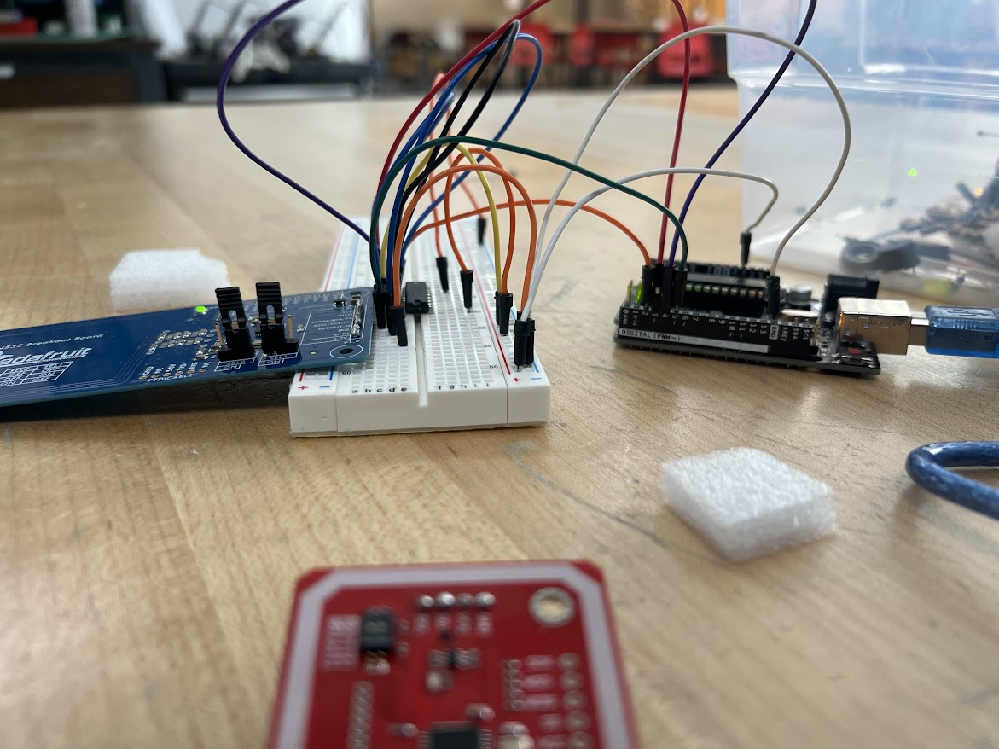
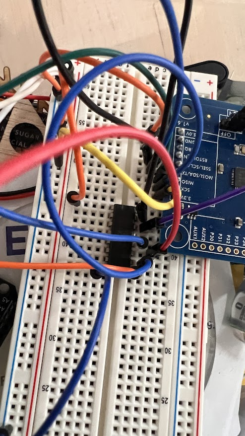
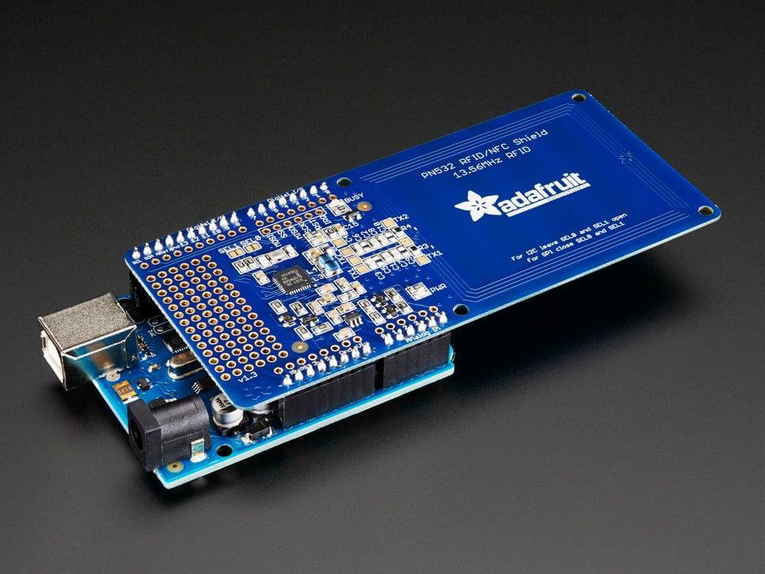
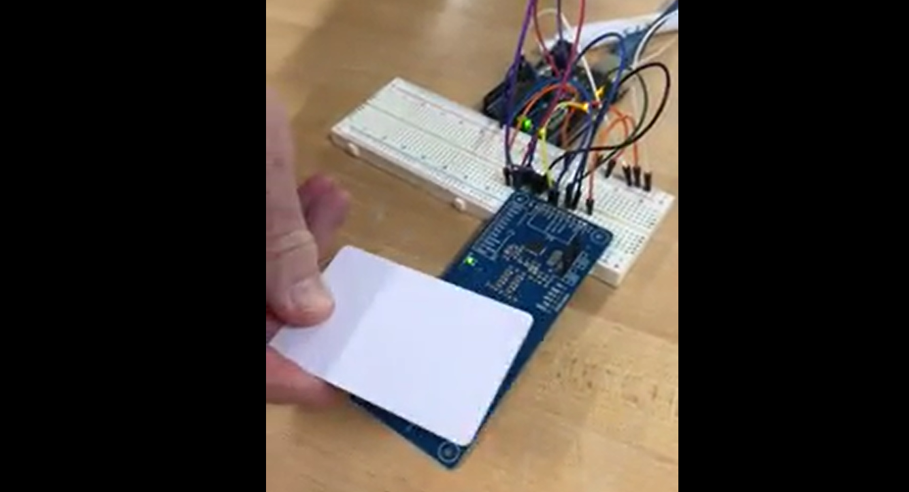
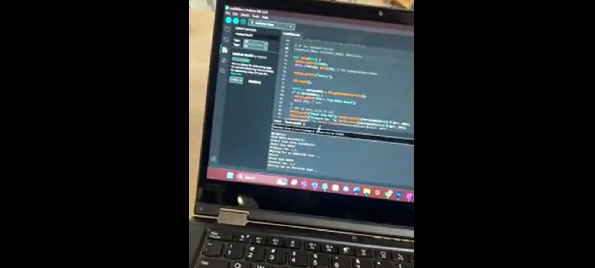

gallery by cameron mansour
This is a gallery of my the process through my NFC project.
1 image credit to adafruit. The rest are taken by Cameron.
This will also showcase the stages of prototyping, and product testing.

v1 of the lunch reader, this was the very first version

v1 of the lunch reader, this was a closer view of the
very first version.

This is an updated version of the sensor. I used this
in v2 of my reader. Image credits to adafruit.

v0 of the sensor, this was my first tester.

This was the very first read out of the RFID unique card
id on the computer. Communicated through serial input.